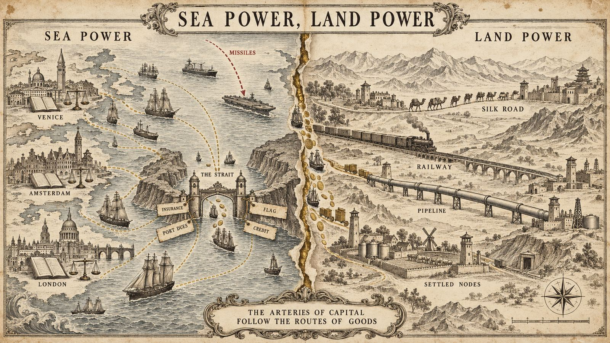
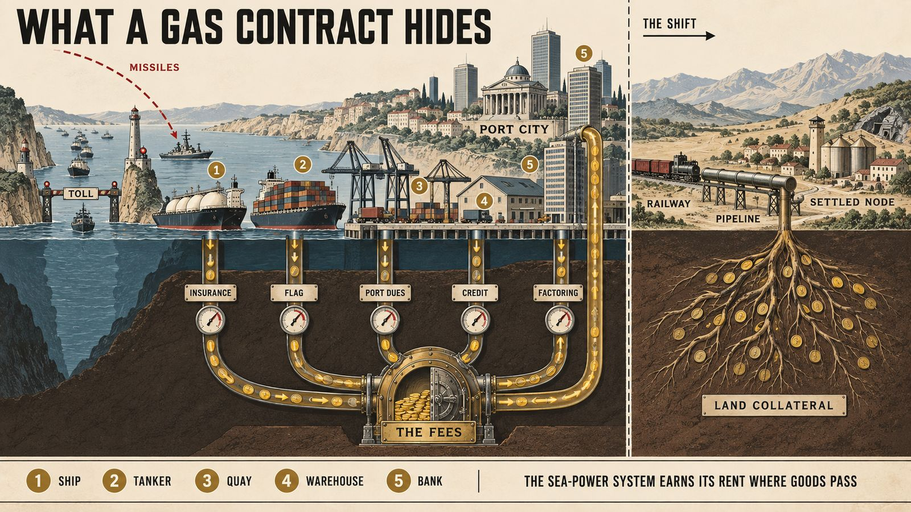

La fin de cinq siècles d'empire maritime : la thèse « mer contre terre »The end of five centuries of naval empire: the "sea versus land" thesis
InterprétationInterpretationRich Does Politics avec EM Burlingame, 14 septembre 2026Rich Does Politics with EM Burlingame, September 14, 2026
Depuis Venise, la finance mondiale serait construite autour de la puissance maritime : ports, détroits, assurances, frais de passage. Les missiles hypersoniques ayant rendu les marines vulnérables, l'ordre bascule vers les puissances terrestres, et Trump accélérerait ce basculement en rendant les routes maritimes trop coûteuses. Une grille géopolitique ancienne, poussée jusqu'à une lecture unique de tous les conflits.Since Venice, global finance would have been built around sea power: ports, straits, insurance, transit fees. With hypersonic missiles making navies vulnerable, the order would be tipping toward land powers, and Trump would be accelerating the shift by making sea routes too costly. An old geopolitical lens, pushed all the way to a single reading of every conflict.

Ce que dit le document
Cet entretien de près d'une heure est, de tous ceux que nous avons résumés, celui qui propose la clé de lecture la plus large. EM Burlingame, déjà rencontré dans sa prise de position sur Hamilton et Lincoln, y expose une thèse qui prétend expliquer à la fois l'histoire de la finance depuis l'Antiquité, la disposition des bases militaires américaines, la guerre contre l'Iran, le rôle de la Chine et jusqu'à l'occupation de l'Afghanistan. La conversation suit vingt et un chapitres ; nous les regroupons en dix temps, en ajoutant des encadrés là où un concept mérite d'être posé à part.
1. Un monde bâti autour de la puissance maritime
Le point de départ est une observation d'ordre structurel. Depuis les années 1500, quand les Portugais puis les Espagnols ont commencé à construire une infrastructure de puissance maritime autour du globe, relayés par les Hollandais et les Anglais, la plus grande part des biens circule par mer, sur des routes que patrouillent des marines de guerre. Les places bancaires et financières sont elles-mêmes des villes portuaires, Rotterdam, Londres, Amsterdam, et les instruments qui les font vivre, assurance maritime, connaissements, affacturage, ont été inventés pour la mer. Burlingame remonte plus haut : ce système, dit-il, a été mis au point à Venise, mais ses éléments existaient déjà chez les Grecs, les Phéniciens et les Romains. Sa formule résume tout le reste : « notre système bancaire et financier mondial tout entier est conçu autour de la puissance maritime, à son service et à son profit ».
2. Pourquoi la mer a battu la terre
Cette organisation a dominé parce que ses inventeurs étaient de petits pays côtiers sans ressources : le Portugal, les Pays-Bas, l'Angleterre, Venise dans sa lagune. Un pays qui n'a rien doit faire du commerce, et pour cela déplacer des marchandises en sécurité. Une puissance terrestre doit sécuriser toute la route ; une puissance maritime n'a qu'à défendre ses ports, car il est difficile pour un adversaire de mettre des navires à la mer. Le coût de la sécurité par unité transportée est donc bien plus bas. Une puissance maritime n'a pas besoin non plus de ressources naturelles ni d'un marché intérieur : le monde entier est son fournisseur et son client. Le prix à payer est triple : entretenir une marine, entretenir l'infrastructure physique des ports et de la logistique, et, troisième pilier, « le plus puissant et le plus discret », entretenir un système financier organisé autour de la mer. Burlingame illustre le tout par l'opium : pour l'apporter de l'Inde en Chine, la Compagnie des Indes affrétait des navires ; l'alternative terrestre, à cheval puis à pied à travers l'Asie, avec des pillards tout au long du chemin, n'était pas une option.
3. Les précédents : Phéniciens, Venise, Chine des Ming
Les premières grandes puissances, rappelle-t-il en citant l'archéologue Eric Cline sur l'effondrement de l'âge du bronze, étaient des puissances maritimes de la Méditerranée orientale. Les Phéniciens, dont Carthage fut d'abord un comptoir, forment le premier empire économique de l'Europe future ; Rome domina la Méditerranée avant de dominer les terres ; et Venise, entre le haut Moyen Âge et la Renaissance, bâtit « le premier système bancaire moderne entièrement fondé sur la puissance maritime, qui reste le modèle depuis ». La Compagnie néerlandaise des Indes orientales, la VOC, est présentée comme la société la plus prospère de l'histoire, « 7 000 milliards de dollars d'aujourd'hui », et la Compagnie anglaise des Indes lui succède. L'exemple chinois sert de contre-modèle et d'avertissement : sous les Ming, la Chine posséda la plus grande marine du monde, dont les flottes de l'amiral Zheng He commerçaient jusqu'en Inde et en Afrique orientale sans conquérir personne, avant qu'une faction de cour ne fasse tout arrêter et brûler les chantiers. « Un conte à méditer », dit-il, au moment même où Portugais et Espagnols prenaient la mer.
What the document says
This interview of nearly an hour is, of all those we have summarized, the one that proposes the broadest interpretive key. EM Burlingame, already encountered in his position on Hamilton and Lincoln, sets out a thesis that claims to explain at once the history of finance since antiquity, the layout of American military bases, the war against Iran, China's role and even the occupation of Afghanistan. The conversation runs through twenty-one chapters; we group them into ten movements, adding sidebars wherever a concept deserves to be set out on its own.
1. A world built around sea power
The starting point is a structural observation. Since the 1500s, when the Portuguese and then the Spanish began building an infrastructure of sea power around the globe, followed by the Dutch and the English, most goods have moved by sea, along routes patrolled by navies. The banking and financial centers are themselves port cities, Rotterdam, London, Amsterdam, and the instruments that keep them alive, marine insurance, bills of lading, factoring, were invented for the sea. Burlingame goes further back: this system, he says, was perfected in Venice, but its elements already existed among the Greeks, the Phoenicians and the Romans. His formula sums up everything else: "our entire global banking and financial system is designed around sea power, to support it and benefit from it."
2. Why the sea beat the land
This organization prevailed because its inventors were small coastal countries without resources: Portugal, the Netherlands, England, Venice in its lagoon. A country that has nothing must trade, and to trade it must move goods safely. A land power has to secure the whole route; a sea power only has to defend its ports, since it is hard for an adversary to put ships to sea. The cost of security per unit carried is therefore far lower. A sea power needs neither natural resources nor a domestic market: the whole world is its supplier and its customer. The price is threefold: maintain a navy, maintain the physical infrastructure of ports and logistics, and, third pillar, "the most powerful and the most discreet," maintain a financial system organized around the sea. Burlingame illustrates the whole with opium: to bring it from India to China, the East India Company chartered ships; the land alternative, by horse and on foot across Asia with raiders all along the way, was not an option.
3. The precedents: Phoenicians, Venice, Ming China
The first great powers, he recalls, citing the archaeologist Eric Cline on the Bronze Age collapse, were sea powers of the eastern Mediterranean. The Phoenicians, of whom Carthage was first a trading post, form the first economic empire of the future Europe; Rome dominated the Mediterranean before it dominated the land; and Venice, between the early Middle Ages and the Renaissance, built "the first modern banking system based solely on sea power, which has been the model ever since." The Dutch East India Company, the VOC, is presented as the most prosperous company in history, "$7 trillion in today's money," and the English East India Company succeeds it. The Chinese example is the counter-model and the warning: under the Ming, China possessed the largest navy in the world, whose fleets under Admiral Zheng He traded as far as India and East Africa without conquering anyone, until a court faction had everything stopped and the shipyards burned. "A cautionary tale," he says, at the very moment the Portuguese and Spanish were taking to the sea.
4. À quoi ressemblerait un système financier terrestre
Si tout le système est conçu pour la mer, remplacer ce système suppose de construire une finance fondée sur la puissance terrestre. C'est, selon Burlingame, ce que font la Russie et la Chine, et ce que faisaient déjà les Perses. Une finance terrestre repose sur la sécurisation et la mise en garantie des actifs du sol, terres, mines, usines, réseaux, plutôt que sur les frais prélevés au passage des marchandises. Les peuples de la Route de la soie furent, dit-il, les plus riches du monde jusqu'à ce que la puissance maritime les supplante il y a cinq siècles ; la « nouvelle Route de la soie » chinoise n'a pas choisi son nom au hasard. C'est aussi, selon lui, la raison profonde des guerres périodiques menées contre la Russie : empêcher qu'un cœur continental ne s'organise.
Le présentateur objecte : avions, trains, virements électroniques ne rendent-ils pas la mer obsolète ? La réponse est que c'est justement le point, mais qu'il faut pour cela que « la mondialisation prenne fin ». Une seule puissance terrestre mondiale est impossible, il suffit de regarder un globe ; il faut des sphères d'influence continentales, autosuffisantes, qui commercent entre elles. Et comme les flux de capitaux épousent les flux de marchandises, « tous les prix reposent sur les flux de capitaux », changer les routes des biens change le lieu où se fixent les prix.
5. Forcer le pétrole et le gaz vers les pipelines
L'énergie est l'intrant de base. Pour réorienter le monde, il faut donc rendre le transport maritime du pétrole et du gaz difficile et coûteux, et forcer ainsi la construction, la sécurisation et la capitalisation de pipelines terrestres. Burlingame y voit ce qui se passe, ou s'accélère, avec la guerre entre les États-Unis et l'Iran : davantage de pipelines en chantier, et une Europe plus touchée que les autres parce qu'elle dépendait du gaz qatari livré par méthaniers, dont le système financier européen tirait « beaucoup d'argent » en frais liés à la mer.
6. Tout ce qui se cache dans un contrat gazier
C'est le passage le plus pédagogique de l'entretien, et sans doute le plus utile. Le présentateur pose le cas simple : la Grande-Bretagne a un terminal gazier au pays de Galles, elle signe un contrat avec le Qatar, le Qatar livre. Burlingame déplie alors ce qu'un tel contrat suppose. Les méthaniers doivent être construits, et quelqu'un finance les chantiers, l'acier, l'assurance de la construction. Une fois construit, chaque navire doit être immatriculé sous un pavillon, contre redevance ; chaque escale paie des droits de port ; l'agrandissement, l'entretien et la sécurité du port sont financés par quelqu'un ; la cargaison elle-même doit être assurée avant de quitter le quai ; et les paiements entre tous ces acteurs sont eux-mêmes « affacturés », c'est-à-dire avancés et escomptés par des intermédiaires financiers qui prélèvent leur marge. Le présentateur, qui a travaillé sur le chantier de Ras Laffan au Qatar, complète : 80 000 à 100 000 ouvriers venus d'Inde, du Népal, d'Égypte, des Philippines, un millier de grues, une ville entière surgie du désert, avec le recrutement, le transport, le logement, la paie, et les frais de transfert sur les envois d'argent aux familles. « Ce seul port a généré des millions de transactions financières pendant sa construction, et quelqu'un prend sa part sur chacune. » Les investisseurs eux-mêmes n'engagent pas leur trésorerie : « on ne dépense jamais son cash flow, on nantit », c'est-à-dire qu'on emprunte en donnant le projet en garantie.
4. What a land-based financial system would look like
If the whole system is designed for the sea, replacing it means building a finance founded on land power. That, according to Burlingame, is what Russia and China are doing, and what the Persians already did. A land-based finance rests on securing and collateralizing the assets of the soil, land, mines, plants, networks, rather than on fees levied as goods pass through. The peoples of the Silk Road were, he says, the richest in the world until sea power displaced them five centuries ago; China's "new Silk Road" did not pick its name by chance. It is also, in his view, the deep reason for the periodic wars waged against Russia: to prevent a continental core from organizing itself.
The host objects: do airplanes, trains and electronic transfers not make the sea obsolete? The answer is that this is precisely the point, but that for it to happen "globalization has to end." A single global land power is impossible, one only has to look at a globe; what is needed is continental spheres of influence, self-sufficient, trading with one another. And since capital flows follow the flows of goods, "all pricing rests on the flows of capital," changing the routes of goods changes where prices are set.
5. Forcing oil and gas onto pipelines
Energy is the fundamental input. To reorient the world, then, one must make the seaborne transport of oil and gas difficult and expensive, and so force the construction, securing and capitalization of overland pipelines. Burlingame sees this happening, or accelerating, with the war between the United States and Iran: more pipelines under construction, and a Europe particularly hurt because it depended on Qatari gas delivered by LNG tankers, from which the European financial system drew "a whole lot of money" in sea-related fees.
6. Everything hidden inside one gas contract
This is the most pedagogical passage of the interview, and probably the most useful. The host poses the simple case: Britain has a gas terminal in Wales, it signs a contract with Qatar, Qatar delivers. Burlingame then unfolds what such a contract presupposes. The LNG tankers must be built, and someone finances the shipyards, the steel, the construction insurance. Once built, each ship must be registered under a flag, for a fee; each port call pays port dues; the expansion, maintenance and security of the port are financed by someone; the cargo itself must be insured before it leaves the quay; and the payments between all these actors are themselves "factored," meaning advanced and discounted by financial intermediaries who take their margin. The host, who worked on the Ras Laffan site in Qatar, adds to the picture: 80,000 to 100,000 workers from India, Nepal, Egypt, the Philippines, a thousand cranes, an entire city risen from the desert, with recruitment, transport, housing, payroll, and the transfer fees on remittances to families. "That one port had millions of financial transactions related to it as it was being built, and somebody's getting a piece of each one." The investors themselves do not commit their cash: "you never use cash flow, you collateralize," meaning you borrow by pledging the project as security.

7. Marges minces, percepteurs de frais et despotisme hydraulique
Une fois une telle infrastructure construite, poursuit Burlingame, les marges sont faibles pour tout le monde sauf pour ceux qui perçoivent des intérêts et des frais, payés quoi qu'il arrive, sur les recettes ou sur l'assurance. Et comme l'investissement s'amortit sur trente ou cinquante ans, personne ne financera une infrastructure terrestre concurrente tant que la mer reste moins chère. Pour que le monde change d'orientation, « il faut rendre le voyage par mer trop coûteux ». Tant que la logistique est maritime, « les anciens systèmes bancaires continueront de dominer quoi que vous fassiez, parce qu'ils les possèdent ».
Le présentateur cite alors la prise d'îles de la mer Rouge par les Houthis à l'entrée du canal de Suez, et une rumeur relayée sur une messagerie selon laquelle les Saoudiens auraient demandé une intervention militaire américaine que Trump aurait refusée, ce qui inciterait Riyad à passer par ses pipelines vers la mer Rouge. Burlingame reformule : ne pensez pas ces détroits comme des « points d'étranglement », pensez-les comme des « propriétés », et il introduit le concept de despotisme hydraulique. Dans sa forme ancienne, c'était le contrôle du flux d'eau, qui obligeait tous ceux d'aval à payer une redevance pour boire, laver, cuire, irriguer. Dans sa forme moderne, c'est le contrôle du flux des biens, des services et des intrants, avec un prélèvement sur chacun. Pour sortir du « système financier vénitien », il faut ramener le monde à des puissances terrestres régionales et montrer où se fait « l'extraction qui appauvrit et asservit tout le monde », ce qui est difficile, reconnaît-il, parce que le mécanisme est d'une complexité que presque personne ne saisit.
7. Thin margins, fee collectors and hydraulic despotism
Once such an infrastructure is built, Burlingame continues, margins are thin for everyone except those who collect interest and fees, paid no matter what, out of proceeds or out of insurance. And since the investment is amortized over thirty or fifty years, nobody will finance a competing land infrastructure as long as the sea stays cheaper. For the world to change orientation, "you've got to make it too costly to travel by sea." As long as logistics are maritime, "the old banking systems will continue to dominate no matter what else you do, because they own it."
The host then mentions the Houthis' seizure of Red Sea islands at the entrance to the Suez Canal, and a rumor relayed on a messaging group that the Saudis had asked for an American military intervention which Trump refused, which would push Riyadh toward its pipelines to the Red Sea. Burlingame reframes: do not think of these straits as "chokepoints," think of them as "ownership," and he introduces the concept of hydraulic despotism. In its ancient form it was control of the flow of water, which forced everyone downstream to pay a fee to drink, wash, cook, irrigate. In its modern form it is control of the flow of goods, services and inputs, with a levy on each. To leave the "Venetian financialist system," the world must be driven back to regional land powers and shown where "the extraction that is impoverishing and enslaving everybody" takes place, which is hard, he admits, because the mechanism is of a complexity almost nobody grasps.
8. Ce que les commentateurs ratent, et pourquoi les marines sont finies
Le présentateur résume l'apport de son invité par une métaphore : les commentateurs voient la peau, Burlingame montre les veines. Quand la presse s'étonne que Trump prétende « rouvrir » un détroit d'Ormuz qui était ouvert avant la guerre, elle ne voit pas qu'il s'agit de « briser les flux financiers » en les détournant de la mer. Burlingame donne alors la « raison exacte » : entretenir une puissance maritime coûte infiniment cher. Une puissance terrestre installe des populations et des activités productives autour des nœuds qu'elle doit sécuriser, routes, ports fluviaux, têtes de ligne ferroviaires, aéroports, et ces nœuds paient leur propre sécurité ; la Russie et les États-Unis l'ont fait sur leur territoire. Sur mer, cela n'est possible qu'aux ports, qui restent vulnérables, et il faut entre-temps des marines immenses pour protéger des routes que l'océan rend impossibles à couvrir entièrement. Porte-avions, sous-marins, destroyers : des milliards chacun.
Puis vient l'argument décisif de son raisonnement, et le plus discutable. Les missiles balistiques modernes, et surtout les missiles hypersoniques, auraient « invalidé les marines ». Le danger est à proximité des côtes : un porte-avions qui s'approche d'un littoral peut être détruit sans qu'on puisse rien y faire, or c'est précisément sur les côtes que se trouvent les ports. Un groupe aéronaval coûte des dizaines de milliards à construire et des milliards par an à entretenir, et aucune technologie, lasers ou armes à énergie dirigée, ne le protège d'un missile hypersonique ; avec l'Oreshnik russe, « une seule salve peut rayer un port et sa ville ». Le présentateur note qu'en cas de nouvelle crise aux Malouines, la Grande-Bretagne n'aurait plus la marine nécessaire sans les États-Unis. D'où une conclusion importante, que Burlingame formule avec soin : ce qui se passe n'est pas une croisade bienveillante contre la finance maritime. « C'est une faction des financiers qui le fait », parce que la nature de la guerre a rendu la puissance maritime caduque et rendu le pouvoir à la terre. Il faut donc rerouter les artères financières vers la terre, et pour cela « casser des choses », si possible sans conflit ouvert où l'on perdrait ses porte-avions.
8. What the commentators miss, and why navies are finished
The host sums up his guest's contribution with a metaphor: the commentators see the skin, Burlingame shows the veins. When the press wonders that Trump claims to be "reopening" a Strait of Hormuz that was open before the war, it fails to see that the point is "breaking the financial flows" by redirecting them away from the sea. Burlingame then gives the "exact reason": maintaining sea power is enormously expensive. A land power settles populations and productive activities around the nodes it must secure, roads, river ports, railheads, airports, and those nodes pay for their own security; Russia and the United States have done so across their territory. At sea this is possible only at the ports, which remain vulnerable, and in the meantime immense navies are needed to protect routes the ocean makes impossible to cover entirely. Aircraft carriers, submarines, destroyers: billions each.
Then comes the decisive argument of his reasoning, and the most debatable. Modern ballistic missiles, and above all hypersonic missiles, would have "invalidated navies." The danger is near the coasts: a carrier approaching a shoreline can be destroyed with nothing to be done about it, and it is precisely on the coasts that the ports are. A carrier group costs tens of billions to build and billions a year to maintain, and no technology, lasers or directed-energy weapons, protects it from a hypersonic missile; with Russia's Oreshnik, "one launch can wipe a port and its city off the map." The host notes that in a new Falklands crisis, Britain would no longer have the navy needed without the United States. Hence an important conclusion, which Burlingame states carefully: what is happening is no benevolent crusade against maritime finance. "It's a faction of the financialists doing it," because the nature of warfare has made sea power obsolete and returned power to the land. The financial arteries must therefore be rerouted to the land, and for that "you have to break things," if possible without an open conflict in which one would lose one's carriers.
9. Chaque base américaine protège un flux, et l'Amérique se replie
Si l'on regarde l'infrastructure militaire américaine dans le monde avec cette grille, dit Burlingame, tout s'organise autour de la logistique : des ports, des routes maritimes qui se terminent quelque part sur terre, une présence destinée à protéger les navires marchands. Même une base au centre de l'Afrique se rattache à un port d'exportation sur la côte. Le présentateur observe que le retrait américain du Moyen-Orient détruit aussi la capacité des États-Unis à y projeter leur puissance ; Burlingame répond que « c'est une partie du dessein ». Un empire qui se replie, « c'est de l'histoire ancienne », brûle ses actifs en cercles concentriques pour sécuriser son cœur. Le cœur des États-Unis, c'est l'hémisphère occidental, et trois pays seulement comptent vraiment : le Canada, le Mexique et le Venezuela. Tout le nécessaire, intrants, marchés, production, distribution, est déjà là. Les États-Unis furent une puissance maritime, nés d'une puissance maritime, et la Constitution elle-même aurait été ratifiée pour financer une marine contre les pirates barbaresques ; mais « en dessous, les États-Unis sont en réalité une puissance terrestre », plus de 90 % de leur commerce se faisant chez eux et avec leurs deux voisins.
Que se passe-t-il quand le dernier vrai État maritime, comprenant que la puissance maritime n'est plus la puissance réelle, se retire de l'empire des mers et reroute les artères du capital ? « Qui reste sur le carreau ? Malheureusement, les îles Britanniques et les Européens. » L'Afrique, elle, n'a besoin de rien d'autre que du départ des impérialistes et de la fin de l'extraction ; l'Australie et l'Asie du Sud-Est n'ont besoin de personne ; l'Europe, pauvre en ressources, a dû aller les chercher au loin. Et une société qui n'est pas riche en matières premières peut, une fois libérée du système d'extraction maritime, compenser par des matériaux de synthèse et des procédés plus sobres, à l'image d'un constructeur automobile allemand qui recycle la quasi-totalité de ses véhicules. Ce que les gens ont vraiment besoin, résume-t-il, c'est de nourriture, d'un toit et de sécurité ; « nous n'avons pas besoin d'être une espèce de consommateurs, c'est ce que veulent les banquiers ». Et tout cela est « imposé » par la caducité de la puissance navale, « couplée à ce que fait Bessent de toute façon », qui ne fait qu'accélérer le mouvement.
10. La Chine aide-t-elle l'Iran ? L'Afghanistan, Mackinder et le racket
Le dernier tiers de l'entretien applique la grille à l'actualité. Non, dit Burlingame, la Chine n'aide pas l'Iran : c'est « le vieil argument des puissances maritimes », qui consiste à dresser tout le monde contre tout le monde. Ce que fait la Chine, c'est maintenir un canal de négociation ouvert avec « les Perses », qui leur offre une alternative régionale à Paris et à Londres, une voie pour négocier de bonne foi avec une puissance étrangère au monde de Sykes-Picot. Selon lui, aucune arme et aucun capital ne circulent ; la Chine offre un dialogue, et poursuit un intérêt propre : la Chine ne veut qu'une chose du reste du monde, que ses intrants, l'énergie surtout, continuent d'arriver à un prix supportable pour une population immense, sous peine d'un quatorzième effondrement dynastique. C'est pourquoi elle construit des réacteurs nucléaires à un rythme inouï, dont des réacteurs modulaires à lit de boulets sur lesquels Burlingame dit avoir travaillé il y a vingt-cinq ans, financé alors par des banques européennes. La Perse compte par sa position, « littéralement la Route de la soie » ; l'idéal, pour rerouter les artères du monde, serait que l'Iran cesse d'exporter son pétrole par Ormuz et l'envoie par pipeline vers la Chine, qui construit déjà des voies ferrées jusqu'en Afghanistan.
D'où une question, et une réponse qui est le point le plus fragile de l'entretien. Pourquoi les États-Unis ont-ils combattu les talibans pendant vingt-cinq ans, puis leur ont-ils laissé « un arsenal complet de guerre moderne » et « des dizaines de millions de dollars » chaque semaine ou chaque mois ? Parce qu'une puissance déstabilisatrice, armée et financée, installée en Afghanistan, garantit que la jonction entre la Chine et la Perse ne se fera jamais par le seul endroit où elle doit passer. Le présentateur objecte que c'était l'œuvre de Biden et des « mondialistes » ; Burlingame répond que c'est celle des « puissances maritimes », et le présentateur acquiesce. Puis vient Mackinder : si l'on entretient un anneau de conflits autour de la Russie, on empêche qu'une puissance terrestre ne se développe à partir de l'Europe orientale et de l'Asie centrale ; la même méthode aurait été appliquée autour de la Chine et dans l'hémisphère occidental. Tant que les masses continentales sont en conflit, il faut expédier par mer, et « les banksters prennent leur part sur tout cela : on peut vous aider, ça va juste vous coûter ». Le présentateur nomme la chose : « un racket de protection ». Burlingame conclut que c'est la raison de la plupart des conflits dans le monde, qu'il faut donc s'attaquer aux nœuds de la puissance maritime, la banque et la finance, liés aux ports et aux flux d'intrants, pour qu'« ils n'aient plus l'argent pour causer tous ces problèmes sur terre ». Et il ajoute, en homme qui dit fréquenter les milieux du renseignement et des forces spéciales, qu'il ne croit pas les sociétés prêtes, cognitivement, à une réduction spectaculaire du conflit : « il faudra quelques générations ».
9. Every American base protects a flow, and America pulls back
Look at American military infrastructure around the world through this lens, Burlingame says, and everything organizes itself around logistics: ports, sea routes that terminate somewhere on land, a presence meant to protect merchant ships. Even a base in the heart of Africa attaches to an export port on the coast. The host observes that the American withdrawal from the Middle East also destroys the United States' ability to project power there; Burlingame answers that "that's part of the design." An empire that pulls back, "this is ancient history," burns its assets in concentric circles to secure its core. The core of the United States is the Western Hemisphere, and only three countries truly matter: Canada, Mexico and Venezuela. Everything needed, inputs, markets, production, distribution, is already there. The United States was a sea power, born of a sea power, and the Constitution itself would have been ratified to fund a navy against the Barbary pirates; but "underneath, the United States is really a land power," with more than 90% of its commerce at home and with its two neighbors.
What happens when the last real sea power, understanding that sea power is no longer real power, withdraws from the empire of the seas and reroutes the arteries of capital? "Who gets left out? Unfortunately, it's the British Isles and the Europeans." Africa, for its part, needs nothing other than the departure of the imperialists and the end of extraction; Australia and Southeast Asia need no one; Europe, poor in resources, had to go and fetch them far away. And a society not rich in raw materials can, once freed from the maritime extraction system, compensate with synthetic materials and leaner processes, like a German carmaker that recycles most of its vehicles. What people really need, he sums up, is food, shelter and security; "we don't need to be a consumer species, that's what the bankers want." And all of this is "being forced on us" by the obsolescence of naval power, "coupled with what Bessent has been doing anyway," which only accelerates the movement.
10. Is China helping Iran? Afghanistan, Mackinder and the racket
The last third of the interview applies the lens to current events. No, says Burlingame, China is not helping Iran: that is "the old sea power argument," which consists of setting everyone against everyone. What China is doing is keeping a negotiation channel open with "the Persians," offering them a regional alternative to Paris and London, a path to negotiate in good faith with a power foreign to the Sykes-Picot world. According to him, no weapons and no capital change hands; China offers a dialogue, and pursues a self-interest: China wants only one thing from the rest of the world, that its inputs, energy above all, keep arriving at a price bearable for an immense population, on pain of a fourteenth dynastic collapse. That is why it is building nuclear reactors at an unheard-of pace, including pebble-bed modular reactors on which Burlingame says he worked twenty-five years ago, funded at the time by European banks. Persia is essential by its position, "quite literally the Silk Road"; the ideal, to reroute the world's arteries, would be for Iran to stop exporting its oil through Hormuz and send it by pipeline to China, which is already building railways as far as Afghanistan.
Hence a question, and an answer that is the most fragile point of the interview. Why did the United States fight the Taliban for twenty-five years, then leave them "an entire first-world modern warfare arsenal" and "tens of millions of dollars" every week or month? Because a destabilizing, armed and funded power sitting in Afghanistan guarantees that the junction between China and Persia will never happen through the one place it has to pass. The host objects that this was the work of Biden and the "globalists"; Burlingame answers that it is the work of "the sea powers," and the host agrees. Then comes Mackinder: keep a ring of conflict around Russia and you prevent a land power from developing out of Eastern Europe and Central Asia; the same method would have been applied around China and in the Western Hemisphere. As long as the land masses are in conflict, you have to ship by sea, and "the banksters get a cut of all that: we can help you out, it's just going to cost." The host names the thing: "a protection racket." Burlingame concludes that this is the reason for most conflicts in the world, that one must therefore go after the nodes of sea power, banking and finance, tied to ports and to the flows of inputs, so that "they don't have the money to cause all the problems in the land anymore." And he adds, as a man who says he moves in intelligence and special operations circles, that he does not believe societies are cognitively ready for a dramatic reduction in conflict: "it's going to take some generations."
Vérifiable, ou pas
Socle documenté
- La domination du transport maritime dans le commerce mondial (plus de 80 % en volume selon la CNUCED) et la concentration à Londres des services associés : assurance maritime, courtage de fret, droit maritime, financement des cargaisons.
- La succession des puissances maritimes, Venise, Portugal, Provinces-Unies, Angleterre, États-Unis, et la lignée intellectuelle Mahan, Mackinder, Spykman qui l'a théorisée.
- Les expéditions de Zheng He (1405-1433) et leur arrêt ; la VOC (1602) comme première grande société par actions dotée de pouvoirs quasi souverains.
- Le débat militaire réel sur la vulnérabilité des navires de surface près des côtes (déni d'accès, missiles antinavires chinois, Oreshnik, drones ukrainiens et houthis).
- Le poids des frais fixes dans la chaîne logistique, et la pratique du financement de projet par nantissement plutôt que sur fonds propres.
- La construction accélérée de réacteurs nucléaires en Chine, y compris un réacteur à lit de boulets en service ; les projets ferroviaires chinois vers l'Asie centrale et l'Afghanistan.
- L'équipement militaire laissé en Afghanistan en 2021 (environ 7 milliards de dollars selon l'inspecteur général américain) et les envois hebdomadaires d'aide humanitaire en espèces vers Kaboul, dont l'usage final est discuté.
Reste à démontrer
- Que le système financier ait été « conçu » pour la mer, plutôt que développé là où se faisait le commerce : la distinction entre conception et adaptation porte toute la charge de la thèse.
- Que les missiles hypersoniques aient rendu les marines « caduques » : les marines elles-mêmes concluent à une vulnérabilité accrue et continuent de construire des porte-avions.
- Que la politique iranienne de Trump vise à rendre la mer trop coûteuse pour rerouter les capitaux vers la terre : aucune déclaration officielle ne l'affirme, et les objectifs déclarés sont autres.
- Qu'une finance « terrestre » distincte existe en Russie et en Chine : leurs systèmes bancaires reposent aussi sur les ports, les exportations et les réserves en devises, et la Chine est le premier constructeur naval du monde.
- Que la présence des talibans en Afghanistan soit entretenue pour empêcher la jonction Chine-Iran : c'est une inférence à rebours, à partir du résultat, sans document.
- La Perse « jamais conquise » : l'Iran a été conquis par Alexandre, par les Arabes, par les Mongols et par les Turcs, ce qui affaiblit l'exemple choisi.
- Les rumeurs rapportées (demande saoudienne refusée par Trump) et les chiffres ronds (« 7 000 milliards » pour la VOC, « 90 % » du commerce américain), qui viennent d'estimations populaires plus que de sources établies.
Checkable, or not
Documented base
- The dominance of maritime transport in world trade (more than 80% by volume according to UNCTAD) and the concentration in London of the associated services: marine insurance, freight brokerage, maritime law, cargo finance.
- The succession of sea powers, Venice, Portugal, the United Provinces, England, the United States, and the intellectual line Mahan, Mackinder, Spykman that theorized it.
- Zheng He's expeditions (1405-1433) and their halt; the VOC (1602) as the first great joint-stock company endowed with near-sovereign powers.
- The real military debate on the vulnerability of surface ships near coasts (area denial, Chinese anti-ship missiles, Oreshnik, Ukrainian and Houthi drones).
- The weight of fixed fees in the logistics chain, and the practice of project finance through collateral rather than equity.
- China's accelerated construction of nuclear reactors, including an operating pebble-bed reactor; Chinese rail projects toward Central Asia and Afghanistan.
- The military equipment left in Afghanistan in 2021 (about $7 billion according to the US inspector general) and the weekly shipments of humanitarian cash aid to Kabul, whose final use is debated.
Still to be shown
- That the financial system was "designed" for the sea, rather than developed where trade happened: the distinction between design and adaptation carries the whole weight of the thesis.
- That hypersonic missiles have made navies "obsolete": navies themselves conclude increased vulnerability and keep building carriers.
- That Trump's Iran policy aims to make the sea too costly to reroute capital to the land: no official statement says so, and the stated goals are different.
- That a distinct "land-based" finance exists in Russia and China: their banking systems also rest on ports, exports and foreign-currency reserves, and China is the world's largest shipbuilder.
- That the Taliban's presence in Afghanistan is maintained to prevent a China-Iran junction: this is a backward inference from the outcome, with no document.
- Persia "never conquered": Iran was conquered by Alexander, by the Arabs, by the Mongols and by the Turks, which weakens the chosen example.
- The rumors reported (a Saudi request refused by Trump) and the round figures ("$7 trillion" for the VOC, "90%" of American commerce), which come from popular estimates more than from established sources.
Lecture critique
Commençons par ce que cet entretien apporte, car c'est réel. La plupart des discussions sur la « finance mondiale » la traitent comme une abstraction ; Burlingame la ramène à des objets physiques, des quais, des coques, des polices d'assurance, des redevances de pavillon, et rappelle que ces objets sont concentrés dans quelques villes et que leurs propriétaires sont payés quoi qu'il arrive. Le passage sur le contrat gazier, où un accord « simple » entre deux États se révèle contenir des millions de transactions intermédiées, est une leçon d'économie que l'on peut faire lire à n'importe qui. Et l'idée que la sécurité des routes est le coût caché de tout système d'échange, qu'une puissance maritime paie par une marine et une puissance terrestre par le peuplement de ses nœuds, est une intuition que les historiens de l'économie partagent largement.
Les difficultés commencent quand cette description devient une explication unique. Chaque chose, dans l'entretien, s'explique par « les puissances maritimes » : les guerres contre la Russie, l'occupation de l'Afghanistan, la position de la Chine, le retrait américain, le rôle des Houthis. Une grille qui explique tout ne peut plus être mise en défaut, et le garde-fou n°2 demande alors : que faudrait-il observer pour que Burlingame conclue qu'il s'est trompé ? Si l'Iran continuait d'exporter par Ormuz, si aucun pipeline vers la Chine ne voyait le jour, si les États-Unis renforçaient leur présence navale dans le Golfe, la thèse survivrait sans doute, en expliquant que le processus prend du temps. C'est le signe d'un récit qui s'est fermé sur lui-même. Le passage sur l'Afghanistan en est l'exemple le plus net : une inférence à partir du résultat, « puisque les talibans bloquent la jonction, on les a laissés là pour cela », que rien ne documente et qui ignore les explications ordinaires, l'échec, la lassitude, la précipitation du retrait.
Un second point mérite l'attention parce que Burlingame le formule lui-même et que son hôte ne le relève pas. Ce qui se passe, dit-il, n'a rien d'une lutte bienveillante contre la finance : « c'est une faction des financiers qui le fait », parce que la technologie a changé la donne. Cette phrase contredit en partie le cadre de l'émission, Trump contre les mondialistes, et rejoint l'idée que nous répétons sur ce site : les mêmes structures peuvent servir plusieurs camps, et les « financiers » ne sont pas un bloc. C'est aussi ce que demande le garde-fou n°6 : remplacer les étiquettes collectives, « les puissances maritimes », « les banksters », « la City », par des acteurs nommés et des décisions datées. Sans cela, la grille glisse vers l'idée d'un adversaire unique et immémorial, celle que nous avons déjà critiquée chez Holt.
Restent les faits contraires que la thèse doit affronter. La Chine, présentée comme puissance terrestre par excellence, possède aujourd'hui la plus grande marine du monde par le nombre de navires et construit plus de la moitié du tonnage mondial ; sa « nouvelle Route de la soie » comporte autant de ports, du Pirée à Gwadar, que de voies ferrées. Les pipelines sont eux-mêmes des points d'étranglement, comme l'ont montré le sabotage de Nord Stream en 2022 et les interruptions du transit ukrainien, et les puissances continentales se disputent leur tracé aussi âprement que les détroits. Et le transport par mer reste, et de loin, le moins cher par tonne transportée ; le rendre « trop coûteux » supposerait un effort durable et coûteux pour tout le monde, à commencer par les États-Unis. Aucun de ces faits ne réfute la thèse, mais chacun la ramène à ce qu'elle est : une hypothèse ambitieuse sur la direction du monde, qui mérite d'être connue, et suivie avec les mêmes garde-fous que les autres.
Critical reading
Start with what this interview contributes, because it is real. Most discussions of "global finance" treat it as an abstraction; Burlingame brings it back to physical objects, quays, hulls, insurance policies, flag fees, and reminds us that these objects are concentrated in a few cities and that their owners are paid no matter what. The passage on the gas contract, where a "simple" agreement between two states turns out to contain millions of intermediated transactions, is a lesson in economics anyone could be handed. And the idea that the security of routes is the hidden cost of any system of exchange, which a sea power pays through a navy and a land power through the settlement of its nodes, is an intuition economic historians widely share.
The difficulties begin when this description becomes a single explanation. Everything in the interview is explained by "the sea powers": the wars against Russia, the occupation of Afghanistan, China's position, the American withdrawal, the role of the Houthis. A lens that explains everything can no longer be caught out, and guardrail 2 then asks: what would Burlingame need to observe to conclude he was wrong? If Iran kept exporting through Hormuz, if no pipeline to China materialized, if the United States reinforced its naval presence in the Gulf, the thesis would probably survive, by explaining that the process takes time. That is the sign of a narrative that has closed in on itself. The Afghanistan passage is the clearest example: an inference from the outcome, "since the Taliban block the junction, they were left there for that purpose," which nothing documents and which ignores the ordinary explanations, failure, fatigue, the haste of the withdrawal.
A second point deserves attention because Burlingame states it himself and his host does not pick it up. What is happening, he says, has nothing benevolent about it: "it's a faction of the financialists doing it," because technology has changed the game. That sentence partly contradicts the show's frame, Trump against the globalists, and joins the idea we keep repeating on this site: the same structures can serve several camps, and "the financiers" are no monolith. It is also what guardrail 6 asks for: replace collective labels, "the sea powers," "the banksters," "the City," with named actors and dated decisions. Without that, the lens slides toward the idea of a single, immemorial adversary, the one we have already criticized in Holt.
Then there are the contrary facts the thesis must face. China, presented as the land power par excellence, today has the world's largest navy by number of ships and builds more than half of world tonnage; its "new Silk Road" has as many ports, from Piraeus to Gwadar, as railways. Pipelines are themselves chokepoints, as the sabotage of Nord Stream in 2022 and the interruptions of Ukrainian transit showed, and continental powers fight over their routes as fiercely as over straits. And sea transport remains by far the cheapest per ton carried; making it "too costly" would require a lasting and expensive effort for everyone, starting with the United States. None of these facts refutes the thesis, but each brings it back to what it is: an ambitious hypothesis about the direction of the world, worth knowing, and worth following with the same guardrails as the others.